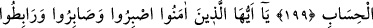
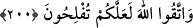

EBEDÎ SAÂDET
196. İnkârcıların (refah içinde) diyar diyar dolaşması, sakın seni aldatmasın!
197. Azıcık bir menfaattır o. Sonra onların varacakları yer cehennemdir. O ne
kötü varış yeridir.
198. Fakat Rablerine karşı gelmekten sakınanlar için, Allah tarafından bir ikrâm
olarak, altlarından ırmaklar akan, ebedî olarak kalacakları cennetler vardır. İyi
(sâlih) kişiler için Allah katındaki (nîmetler) daha hayırlıdır.
199. Ehl-i kitaptan öyleleri var ki; Allah’a, hem size indirilene, hem de
kendilerine indirilene tam bir samîmîyetle ve Allah’a boyun eğerek îman ederler.
Allah’ın âyetlerini az bir paraya satmazlar. İşte onlar için Rableri katında ecirleri
vardır. Şüphesiz Allah, hesabı çabuk olandır.
200. Ey îman edenler! Sabredin; (düşman karşısında) sebât gösterin; (cihad için)
hazırlıklı ve uyanık bulunun ve Allah’dan korkun ki başarıya erişebilesiniz.
Burada muhâtap Hz. Peygamber (s.a.)’dir. Zira bir peygamberin mâsûm oluşu
kendisine yasak konmamasını gerektirmez. Mâsûmdur diye peygambere yasak
konulmayacak olsaydı, mâsûmiyet mefhûmu boş bir şey olurdu. Çünkü ismet,
peygamberi emre karşı gelmekten korumak demektir. Yasak konmazsa, karşı gelmek söz
konusu olamaz. Karşı gelmek söz konusu olmayınca da mâsûmiyet söz konusu olmaz. Bu
hitaptan maksat, Hz. Peygamber (s.a.)’in dünyaya değer vermediğini tesbittir. Yahud
buradaki hitap, Hz. Peygamber (s.a.)’e olup esas kastedilen de ümmeti olabilir. Nitekim
bir kavmin önder ve ileri gelenine hitap edilir ve bununla hepsi kastedilir. Burada da
sanki “sizi aldatmasın” denilmiş olmaktadır.
Kendisine yasak getirilen, aslında muhâtaptır. Bu sebeple “gezip dolaşma” bir tenzil